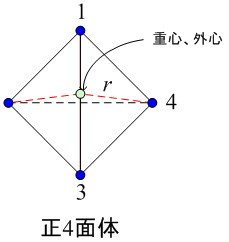
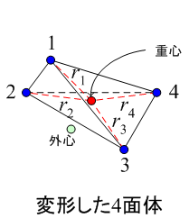

広告
要素の変形
ラグラジアン座標の場合は、節点が移動するため要素が変形します。
そのまま変形が進むと計算が破綻したりするので、メッシュの再作成が必要とります。
その目安を要素の変形度として次の様に計算してみます。


上図の様に正4面体の場合は、 重心と外心の座標が等しいが、変形するとそれらの位置はずれます。 この重心と外心のずれから要素の変形度を計算します。
つまり、本来は外心と等しいはずの要素の重心から各節点までの距離を計算します。 外心を使用するのは、外心が外接球の中心で各節点までの距離が等しいからです。
まず、要素の重心の位置は次式となります。
\[\begin{aligned}x_g&=\frac{1}{4}\sum_{i=1}^{4}x_i\\[6pt]y_g&=\frac{1}{4}\sum_{i=1}^{4}y_i\\[6pt]z_g&=\frac{1}{4}\sum_{i=1}^{4}z_i\end{aligned}\]
正4面体の重心から各節点までの距離を rとします。rは未知数です。
また、変形した4面体の重心から各節点までの距離を次式とします。
\[r_i=\sqrt{(x_i-x_g)^2+(y_i-y_g)^2+(z_i-z_g)^2}\]
ここで、各節点から重心までの距離のずれをdrとすると次式となる。
\[\begin{aligned}dr^2&=\sum_{i=1}^{4}(r_i-r)^2\\[6pt]&=\sum_{i=1}^{4}(r^2-2r_ir+r_i^2)\\[6pt]&=\sum_{i=1}^{4}r^2-\sum_{i=1}^{4}2r_ir+\sum_{i=1}^{4}r_i^2\\[6pt]&=4r^2-2\sum_{i=1}^{4}r_ir+\sum_{i=1}^{4}r_i^2\\[6pt]&=4r^2-2ar+b\\[6pt]&=4\left(r^2-\frac{1}{2}ar+\frac{b}{4}\right)\\[6pt]&=4\left\{\left(r^2-\frac{1}{2}ar+\frac{1}{16}a^2\right)-\frac{1}{16}a^2+\frac{b}{4}\right\}\\[6pt]&=4\left\{\left(r-\frac{1}{4}a\right)^2-\frac{1}{16}a^2+\frac{b}{4}\right\}\\[6pt]&=4\left\{\left(r-\frac{1}{4}a\right)^2-\frac{1}{16}a^2+\frac{b}{4}\right\}\\[6pt]&=4\left(r-\frac{1}{4}a\right)^2-\frac{1}{4}a^2+b\end{aligned}\]
ここで、
\[\begin{aligned}a&=\sum_{i=1}^{4}r_i\\[6pt]b&=\sum_{i=1}^{4}r_i^2\end{aligned}\]
このずれは、次の場合に最小となります。
\[dr_{\min}^{2}=b-\left(\frac{a}{2}\right)^2\qquad \text{at }r_{\min}=\frac{a}{4}\]
従って、規格化したこのずれを変形度とすると次式となります。
\[\begin{aligned}dR_{\min}^{2}&=\frac{dr_{\min}^{2}}{r_{\min}^{2}}\\[6pt]&=\frac{b-(a/2)^2}{(a/4)^2}\\[6pt]&=\frac{16b-4a^2}{a^2}\\[6pt]&=\left(\frac{2}{a}\right)^2(4b-a^2)\end{aligned}\]
従って、
\[\begin{aligned}dR_{\min}&=\frac{2}{a}\sqrt{4b-a^2}\\[6pt]&=\frac{2}{\displaystyle\sum_{i=1}^{4}r_i}\sqrt{4\sum_{i=1}^{4}r_i^2-\left(\sum_{i=1}^{4}r_i\right)^2}\end{aligned}\]
この変形度は、要素が正4面体の場合0になります。
経験的に0.5～0.7がメッシュ再作成の目安になりました。
| prev | | | up | | | next |